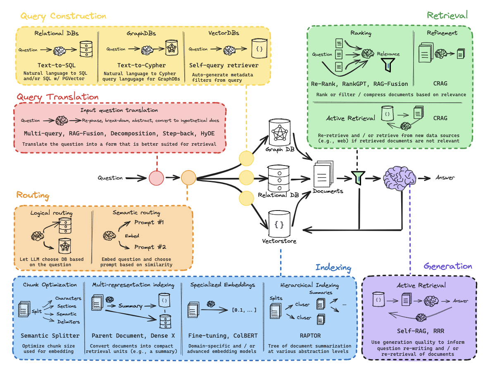
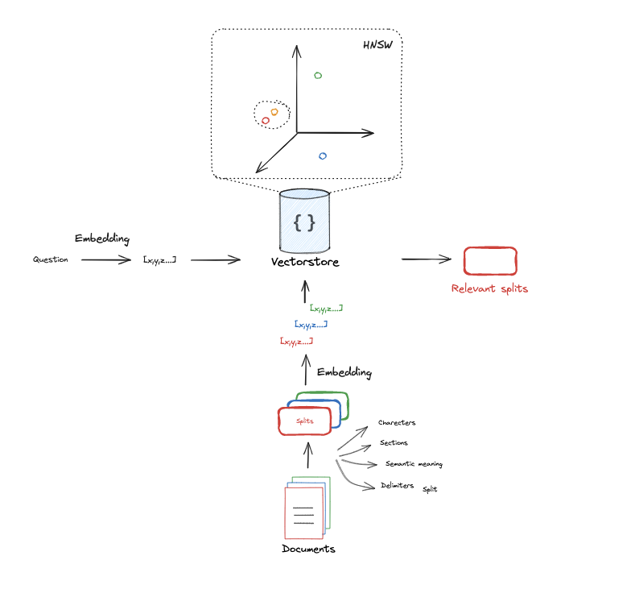
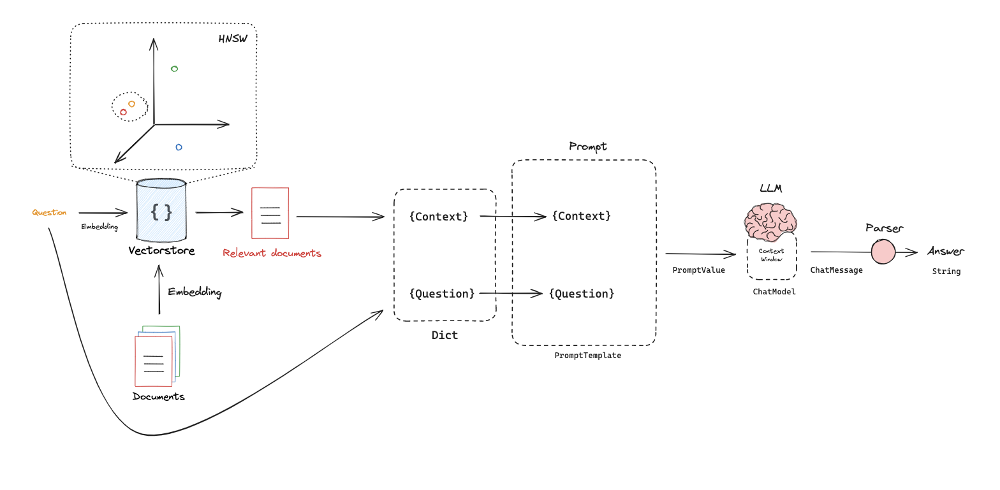
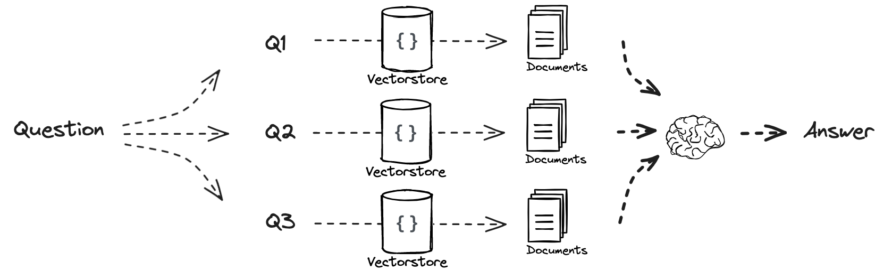
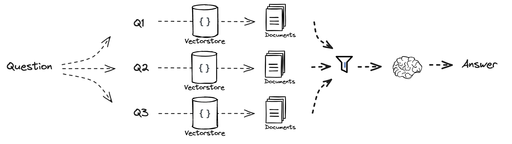
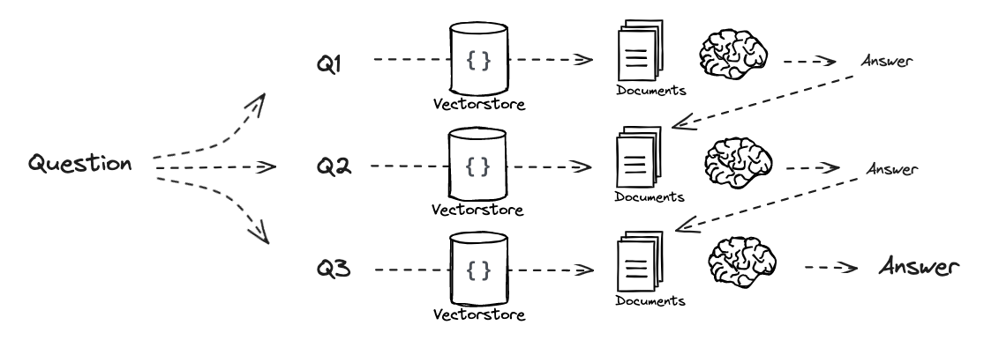
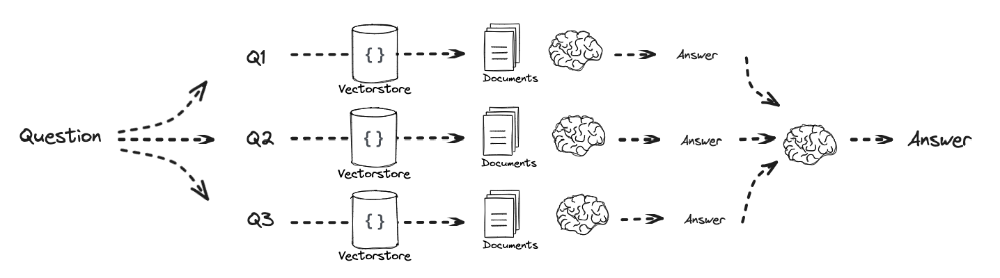
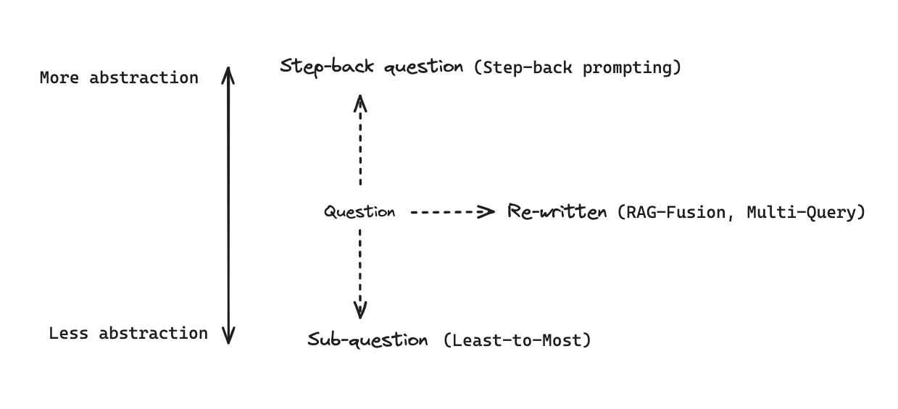
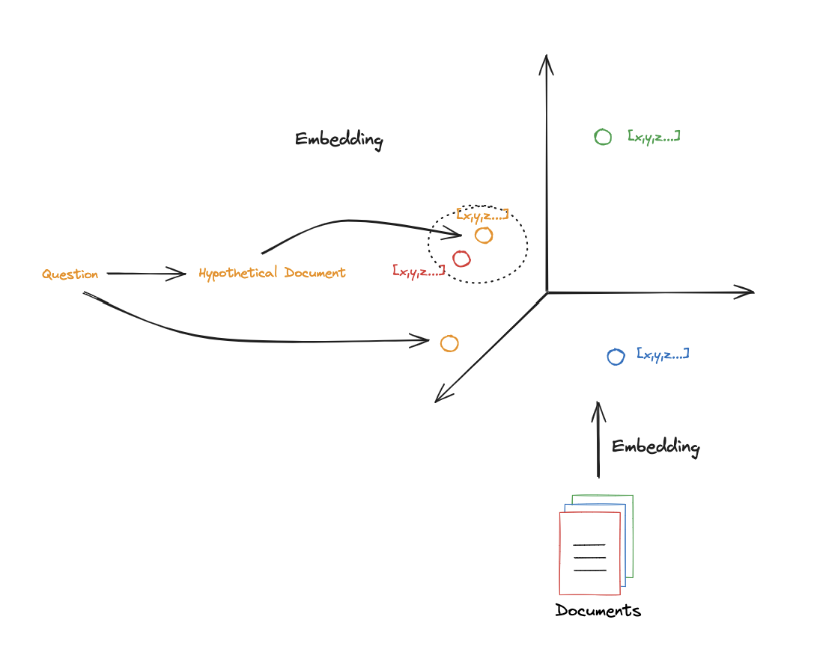

Parts 1–9 explained in plain language, with diagrams and worked examples.
RAG stands for Retrieval-Augmented Generation. The idea is simple: a language model is only as good as what it has already read, and it has only read what it was trained on. RAG lets it answer from your documents instead — you keep your text in a form that can be searched, find the parts that matter for a question, and hand those parts to the model as context. The model then writes an answer grounded in that text rather than in its memory.
The rest of this document builds that idea up one piece at a time. Parts 1–4 build the chain itself: first a bird's-eye view of the whole thing, then indexing, then retrieval, then generation. Parts 5–9 then improve the one step that most often falls short — the search. Each section stays close to the ground, with a diagram and a worked example, so the reasoning is easy to follow even if you have never built a RAG system before.
Before learning how RAG works, it helps to understand the problem it was invented to solve. A language model's knowledge is fixed the moment its training ends. Everything it "knows" is baked into its weights as a compressed, statistical impression of the text it saw — and that leads to four problems you meet almost immediately in real use.
The model has no idea anything was published after its training cut-off. Ask about a change made last week and it simply cannot know.
It has never seen your notes, tickets, contracts or internal documentation. That information exists only in your systems, not in its weights.
When it doesn't know, it rarely says so. It produces something plausible-sounding instead — a "hallucination" that reads as fluently as a fact.
Even when the answer is right, there is no way to check where it came from. You cannot trace the claim back to a document.
You might wonder why we don't simply teach the model new facts by fine-tuning it. Fine-tuning is good at shaping style and form — how the model writes, the tone it takes, the format it follows. But it is a poor tool for facts. It is slow and expensive to repeat, it cannot cite where an answer came from, and every time a single document changes you would have to retrain. RAG takes the opposite approach: leave the model as it is, and give it the right text at the moment it answers. Updating knowledge becomes as cheap as re-indexing one file, and the answer can point straight back at the text it used.
One of the most useful mental models in RAG is that there are really two separate jobs, running at different times, sharing a single store. The first job, indexing, runs once over all of your documents and prepares them to be searched. The second job, serving, runs every time someone asks a question: it searches what indexing prepared and produces an answer.
Keeping these apart matters because they have very different constraints. Indexing can take minutes or hours — it is a batch job you run in the background. Serving, by contrast, happens while a person waits, so it has to be fast. Both halves meet at one place: the vector store, which indexing writes to and serving reads from.
| Indexing | Serving | |
|---|---|---|
| When | Offline, ahead of time | Online, per question |
| Input | All your documents | One question |
| Output | A searchable store | One answer |
| Steps | load → split → embed → store | embed → retrieve → generate |
| Speed | Can be slow (batch) | Must be fast (interactive) |
Put the two jobs together and you get the three phases that every RAG system shares. Index prepares the documents. Retrieve finds the parts relevant to a question. Generate turns those parts into an answer. The first phase happens once and offline; the other two happen together, live, for every question.

The RAG landscape — we build the backbone: index → retrieve → generate.
Before taking the system apart, it is worth seeing its shape whole. Part 1 runs the entire chain in a single pass, from a document to an answer, without worrying about the details of any one step. The point is to fix the overall picture in your mind before zooming in.
Read left to right, the chain is five small verbs. We load a document, split it into manageable pieces, turn those pieces into searchable form and store them, ask a question, and get an answer. That is the whole of RAG; everything else in this document is just a closer look at one of those verbs.
rag(question).If you look inside that function, only two things are really happening at answer time: it finds the relevant chunks, and it asks the model to answer using them. The first three verbs — loading, splitting and storing — are preparation that happens once. The last two are the live part that runs per question.
Nothing here needs a cloud account or an API key. You install a handful of packages once and run a language model locally on your own machine. That keeps the whole pipeline self-contained and reproducible.
pip install requests trafilatura chonkie sentence-transformers chromadb ollama jinja2To keep the ideas concrete, this document uses one example throughout. We index a single blog post and then ask the question “What is Task Decomposition?” A good answer should be built only from the parts of that post we retrieved — nothing fetched from the model's general memory. Each section below quietly feeds this same example, so by the end you have watched it come together step by step.

Indexing: documents are split, embedded, and stored.
Indexing is the preparation stage. Its goal is simple to state: take your raw documents and turn them into something that can be searched by meaning, quickly and reliably. It runs ahead of time — usually as a batch job — so that when a real question arrives later, the system does not have to touch the original documents at all. It only has to search the prepared store.
Indexing is itself four steps, and each one solves a specific problem. We load the raw text and clean it. We split it into chunks small enough to work with. We embed each chunk into numbers that capture its meaning. And we store those numbers so they can be looked up later. The next seven sections walk through them, beginning with the most basic ingredient of all: the document itself.
A “document” is just the raw text you want the system to know about. It can arrive from almost anywhere — a web page, a markdown file, a PDF, a support ticket, a row in a database. At this stage we don't care about its format or meaning; we care that it is text, plus a little metadata describing where it came from. That metadata might be a URL, a title, a file name, or a date.
It is worth separating two words that are easy to confuse. A document is the whole thing — the entire page or file. A chunk is a piece of it, which we will create in a moment. We keep both: the searchable store indexes chunks, but each chunk remembers which document it came from, so a final answer can point back to its source.
In the smallest possible case, a document is a single sentence, and a question is a single sentence too:
question = “What kinds of pets do I like?”
document = “My favorite pet is a cat.”
With just these two lines we can demonstrate every step from here to an answer, without the noise of real documents getting in the way.
Here is a fact that surprises most people: language models don't read characters, and they don't read whole words either. They read tokens, which are pieces of words. A short common word like “cat” is one token; a longer or rarer word might be split into two or three. Even punctuation gets its own token. Counting tokens is how we measure text in the units the model actually understands.
That count matters for three practical reasons. First, every model has a context window — a maximum amount of text it can take in at once — and the prompt, the retrieved context and the answer all have to fit inside it together. Second, chunks are measured in tokens, so the count is what lets us size them sensibly. Third, tokens translate directly into speed and, on paid runtimes, cost: more tokens per request means slower answers.
As a rough rule of thumb, one token is about four characters of English, so a thousand characters is roughly 250 tokens. That is fine for a quick mental estimate, but before anything is sized for real, confirm the count with the actual tokenizer of the model you will use.
An embedding is the trick that makes search work by meaning rather than by matching exact words. It turns a piece of text into a list of numbers — a vector — that captures what the text is about. Texts with similar meaning end up as nearby vectors, even when they share no words at all. This is why a search for “how do I do X” can find a passage that talks about X without ever using the phrase.
A few properties are worth knowing before you rely on embeddings. Every model produces a vector of a fixed length — this one always gives 1024 numbers — and that length is a property of the model. Different models give different lengths, and crucially, their vectors are not interchangeable: you cannot embed with one model and search against vectors made by another. Vectors are usually scaled to length one (“normalised”), which makes comparing them simple and stable. During indexing you embed many chunks in a batch; at answer time you embed just the one question. And because these models are relatively small, they run comfortably on a CPU, with a GPU only speeding up a large indexing run.
SentenceTransformer("Qwen/Qwen3-Embedding-0.6B").encode(texts) — runs locally, on CPU or GPU.Once text is numbers, comparing two pieces of text becomes a matter of comparing two vectors. The standard way to do that for text is cosine similarity, which measures the angle between the vectors. It deliberately ignores how long each vector is and cares only about the direction it points, which turns out to suit language very well: two texts about the same idea point the same way, regardless of whether one is a short phrase and the other a long paragraph.
The score runs from 1, where the vectors point exactly the same way and the texts are
essentially identical in meaning, down through 0 for unrelated texts, and in principle to
-1 for vectors pointing in opposite directions. For normalised text embeddings the useful
signal lives in a fairly narrow band near the top, and negative values are rare in practice.
| Score | Meaning |
|---|---|
| 1.0 | Same direction — nearly identical meaning |
| ~0.7–0.9 | Clearly related |
| ~0.3–0.6 | Loosely related |
| ~0.0 | Unrelated |
| -1.0 | Opposite direction — maximally dissimilar |
Comparing the embedding of the question with the embedding of the document gives a high score, because they are about the same thing. A sentence about cooking would score far lower. That gap is exactly what retrieval exploits: the chunks with the highest scores are the ones most likely to answer the question.
Real sources are messy. A web page is mostly menus, adverts, cookie banners, navigation and footers wrapped around a small core of actual article text. If you embed all of that noise, you pollute the store with irrelevant material and dilute the answers. A loader exists to prevent that: it fetches the source and keeps only the meaningful text.
A good loader does three things. It extracts the main content and drops the boilerplate. It attaches metadata — the source URL or file name, a title, perhaps a date — which will be carried forward onto every chunk so answers can cite their origin. And it normalises whitespace and encoding, so the same text always looks the same no matter how it arrived.
trafilatura.extract(requests.get(url).text) — fetches a page and automatically keeps only the main article.Long documents have to be broken into smaller pieces, called chunks. This is not a cosmetic step — the chunk is the unit that gets embedded, retrieved and handed to the model, so where you draw its boundaries shapes everything downstream. We split for three reasons.
First, precision. A small, focused chunk that genuinely matches the question beats a whole page that only sort of matches, because the model is handed less irrelevant text to wade through. Second, fit: chunks must be able to sit inside the model's context window alongside the prompt. Third, boundaries themselves can do harm, so chunks usually overlap slightly. A sentence that happens to fall on a cut can otherwise be split in half and lose its meaning; a small overlap keeps that context intact.
chunk_size = 300 tokens, chunk_overlap = 50Chunk size is a trade-off, and it is worth internalising. Small chunks give precise matches but may leave out the surrounding context needed to understand them. Large chunks carry more context but dilute relevance and eat into the context window. There is no universal best size; it depends on your documents, so it is a parameter you tune.
| Chunk size | Good | Bad |
|---|---|---|
| Small | Precise matches | May miss surrounding context |
| Large | More context per chunk | Dilutes relevance, wastes window |
RecursiveChunker splits by tokens using the model's
tokenizer, trying paragraph, then sentence, then word boundaries before resorting to a hard cut. Pass that
tokenizer explicitly: if you do not, RecursiveChunker falls back to a character tokenizer and
chunk_size silently becomes a character budget — the same article at
chunk_size=300 becomes 34 chunks by token and 185 by character. It also exposes no overlap
parameter, so its chunks are packed back to back.The last step of indexing is to save the results. A vector store holds each chunk together with its vector, so that later we can ask a simple question of it: which chunks are closest to this new question? Think of it as a library you build out of your own documents, organised by meaning rather than alphabet.
| id | chunk (text) | vector |
|---|---|---|
| doc:0 | “Task decomposition is…” | [0.02, -0.13, …] |
| doc:1 | “ReAct combines reasoning…” | [0.41, 0.08, …] |
| doc:2 | “Memory keeps context…” | [-0.22, 0.55, …] |
A few details make a vector store pleasant to live with. Searching for the nearest vectors is done with a structure built for it — often something called HNSW — so it stays fast even with many chunks, rather than comparing the query against every vector one by one. You can filter by metadata, for instance to search only within one file. Chunks are stored under stable ids, derived from the source and position, so that re-running indexing updates existing entries instead of creating duplicates. And the store is persistent: it lives on disk, so you don't rebuild it every time you start the program.
chromadb.PersistentClient → collection.add(ids, documents, embeddings, metadatas).With the store built, we reach the live half of the system. Retrieval answers a single question: which chunks are most relevant to what was just asked? The method is the same idea we used to build the store, run in reverse. We embed the question with the same embedding model, then look for the chunks whose vectors are nearest to the question's vector. The handful of closest chunks — the “top-k” — are what get passed on.
collection.query(query_embeddings=[…], n_results=k)
The one number to choose here is k — how many chunks to retrieve. It is a genuine trade-off.
Retrieve too few and the correct chunk may never make it into the context, making a good answer impossible.
Retrieve too many and you flood the model with loosely related text, which dilutes the signal and crowds the
context window.
| k | Effect |
|---|---|
| Too small (1–2) | Fast, but risks missing the answer |
| Balanced (4–6) | Usually the sweet spot |
| Too large | Adds noise and fills the context window |
Asking “What is Task Decomposition?” with k=1 returns the single most relevant chunk.
Raising it to k=5 gives the model several chunks to draw on, which often helps when an answer
is spread across more than one passage.
k — rather than from a larger language model.The retrieved chunks are then gathered together, usually reordered with the most relevant first and trimmed to fit the token budget, before being passed to the final stage.

Generation: retrieved context plus the question go into the model.
This is the stage that gives RAG its name. The chunks retrieved in Part 3 are placed into a prompt alongside the question, and the language model writes an answer from that context. This is the “Generation” in Retrieval-Augmented Generation, and it is what makes the answer grounded: the model is now working from your documents rather than reaching into its memory.
Most of the craft in this stage lives in the prompt. A good one asks for three things. It asks the model to ground itself — “answer only from the context” — which reduces invented facts. It asks for citations — “point to the source of each claim” — which makes answers checkable. And it gives the model permission to be honest: “if the context does not contain the answer, say so”. That last instruction is easy to forget and quietly prevents a lot of confident nonsense.
A few parameters shape the output. Temperature controls randomness — at zero the model is focused and repeatable, and higher values make it more varied (though even at zero, it is not perfectly deterministic). A cap on answer length both keeps replies concise and reserves room in the context window. And the context window itself is the total budget shared by the prompt, the context and the answer; its size depends on the model, so it is worth checking rather than assuming.
| Setting | Effect |
|---|---|
| temperature | 0 = focused and repeatable; higher = more varied (not fully deterministic) |
| max answer tokens | Caps answer length and reserves space in the context window |
| context window | Total budget for prompt + context + answer; verify per model |
“Answer the question based only on the following context: {context}. Question: {question}”
The retrieved chunks fill {context}, the user's question fills {question}, and the model's reply is the answer.
ollama.chat(model="gpt-oss:20b", messages=[…]) — both wrapped up in one plain rag(question)
function.
Multi-Query: the question fans out into several paraphrases, each one searches the vector store, and the results are merged before the model answers.
The chain so far asks the vector store exactly one question: the user's. That is a sensible default and it works more often than you might expect. But it rests on a single embedding of a single sentence, and a question is rarely worded the way its best passage is. A user asks “how do I stop the bot looping?” while the page that answers it says “retry with exponential backoff”. Almost nothing in common, so almost nothing is found.
The five parts that follow all attack that mismatch, and all attack it the same way: improve the query before it reaches the vector store, then run Parts 3 and 4 completely unchanged. Notice what that leaves alone. The documents are not re-indexed. The prompt template is not improved. The language model does not change. The only thing that moves is the string being embedded.
Multi-Query takes the simplest possible route. Ask the model for several different versions of the same question, run a retrieval for each one, and keep the unique union of everything that comes back. A chunk found by any single phrasing survives, so the technique is only ever additive: it can pull in a passage the original question missed, and it cannot remove one the original question found.
Asked “What is Task Decomposition?”, the model might also produce “How is a complex task broken into smaller steps?”, “What are subgoals for an LLM agent?” and “How does chain-of-thought relate to task planning?”. Each retrieves its own top-k, and the union is noticeably wider than any single retrieval.
Read more: Query2doc: Query Expansion with Large Language Models · Query Expansion in the Age of LLMs: A Survey.

RAG-Fusion: the same fan-out as Multi-Query, but the separate result lists pass through a re-ranker (Reciprocal Rank Fusion) before the model sees them.
RAG-Fusion is Multi-Query with one change: instead of throwing the rankings away, it uses them.
Each query still produces its own ordered list, and every chunk found at position r of a list earns
a score for that list: 1 / (r + k), summed across every list the chunk appears in.
| Found at | Contributes | Intuition |
|---|---|---|
| rank 0 of one list | 1 / k | Best hit of a single query — decent, not decisive |
| rank 5 of five lists | 5 / (5 + k) | Weakly placed, but agreed on by every query |
| rank 0 of five lists | 5 / k | The chunk all the paraphrases liked best |
The point is the second row. A chunk that never ranked highly but shows up in every list beats a chunk that was the single best hit of one query and was never seen again. Reciprocal Rank Fusion has no notion of an irrelevant chunk to discard — its whole job is to reward agreement, and it does not care how the underlying store decided each individual ranking was correct.
k (60 by convention) flattens the curve. It is large enough that the
first few ranks are close together, which stops a single list from dominating the result just by having its
rank 0 weigh more than everything else.
With the same five paraphrases of “What is Task Decomposition?”, the plain union hands the
model roughly 5 × 5 chunks in no particular order. RAG-Fusion hands it fewer, ordered, with
the chunks that several paraphrases independently surfaced at the top — which is usually where the
actual definition lives.
Read more: Forget RAG, the future is RAG-Fusion · Reciprocal Rank Fusion (Cormack, Clarke & Büttcher, 2009).
Multi-Query asks variations of one question. Decomposition changes its shape entirely: it breaks the question into sub-questions that can each be answered on their own, retrieves for each, and combines the results. It is the right tool when one question is really several questions wearing a trench coat.
“What are the main components of an LLM-powered autonomous agent system?” is not really one retrieval. It is a request for a list of parts, and no single 300-token chunk of any page is going to answer it well. The same document, retrieved competently, may contain the answer spread across six chunks that never resemble the question as a whole.
Once the sub-questions exist there are two honest ways to answer them, and the trade-off is real rather than stylistic.
Answer them in order, passing every answer so far as background for the next one. Early findings become evidence for later ones, which is what makes it recursive rather than merely parallel.
Costs: order-dependent — a poor first answer steers the rest — and the accumulated background grows the prompt at every step.
Answer each in isolation: its own retrieval, its own context, no knowledge of its siblings. No answer can contaminate another and nothing grows.
Costs: later steps cannot use what the earlier ones found, and the model is asked to reconcile answers that were written without seeing each other.

Recursive: each sub-question is retrieved and answered, and every answer is carried forward before a final answer is synthesized.

Individual: each sub-question is retrieved and answered in isolation, with nothing passed between them.
Either way the last step is identical: hand the question-and-answer pairs to the model and ask for one synthesized answer to the original question. Note that decomposition needs a second generation pass after the per-sub-question passes, which is what makes it the most expensive technique here — and also the one that most rewards careful budgeting.
Papers: Least-to-Most Prompting · Tree of Thoughts.

Where step-back sits on the abstraction axis: up to a broader question, down to sub-questions.
Some questions are too specific to retrieve with. Ask “when was Jan Sindel born?” and you search for a date; ask “what is Jan Sindel's personal history?” and you search for the passage that actually contains it.
Step-Back paraphrases the question into a broader one and then retrieves with both — the original for precision, the step-back question for coverage. Unlike Multi-Query the two results are kept apart and labelled, so the model can tell which is which.
“What is Task Decomposition?” steps back to “How do LLM agents break down a complex task?”. The original retrieves the definition; the broader version tends to retrieve the passages around it — the planning context, the chain-of-thought comparison — which is usually what makes the definition legible.
Paper: Take a Step Back: Evoking Reasoning via Abstraction in Large Language Models.

HyDE: the question generates a hypothetical answer passage, and its embedding is what lands among the real documents on the right.
Here is the mismatch in its sharpest form. The question and the passage that answers it often share almost no words. “What is task decomposition?” has nothing in common with “Task decomposition can be done by LLM with simple prompting, or by task-specific instructions, or with human input.” Both are about the same thing; neither reads like the other.
HyDE — Hypothetical Document Embeddings — inverts the usual direction. Instead of searching with the question, ask the model to write a short passage that would answer it, then search with that. The fabricated passage reads like a real one, so it lands among the right chunks even though it is entirely made up.
| Technique | Best when | Extra model calls |
|---|---|---|
| Baseline | Always a strong default; use it first | 1 |
| Multi-Query | The question is phrased far from the document | +1 |
| RAG-Fusion | As above, and the ranking matters | +1 |
| Decomposition | One question that is really several | +1 per sub-question, +1 to synthesize |
| Step-Back | The question is too specific to match a passage | +1 |
| HyDE | The vocabulary simply does not overlap | +1 |
“Extra model calls” counts calls beyond the baseline's single generation call. Read that last column before reaching for any of them. Every technique in Parts 5–9 costs at least one extra round-trip to the model on every single question, and if the baseline retrieval was already retrieving the right chunks, all of that buys nothing. The reliable way to find out is to measure: run the baseline, look at whether the answer's chunk was in the context, and only reach for a query transformation when it was not.
Read more: Precise Zero-Shot Dense Retrieval without Relevance Labels (the HyDE paper) · ACL 2023 version.
It is worth seeing the whole thing in one view now that each piece has been explained. Indexing runs once along the top, turning documents into a store. Then, for each question, the flow drops into the serving half along the bottom: embed the question, retrieve the nearest chunks, build the prompt, and generate the answer.
Parts 5–9 slot into exactly one place in that bottom row: between “ask a question” and “embed question”. Everything else stays where it is.
And optionally, between steps 4 and 5, rewrite that question into something easier to search for — then take steps 5 and 6 unchanged.
A handful of numbers shape the behaviour of the whole pipeline. None has a single correct value — they are dials you adjust to your documents — but these are sensible starting points. The last four only matter once you add query transformations from Parts 5–9.
| Parameter | Typical value | What it controls |
|---|---|---|
| chunk_size_tokens | 300–512 | How much text per chunk |
| chunk_overlap_tokens | 10–20% of size | Context carried across boundaries |
| k | 4–6 | How many chunks are retrieved |
| temperature | 0 | Randomness of generation |
| context_window | model-specific | Total prompt + context + answer budget |
| max_answer_tokens | 512–1024 | Cap on answer length |
| num_queries | 3–5 | Paraphrases or sub-questions generated per question |
| rrf_k | 60 | Flattens RRF so one list cannot dominate |
| max_context_chunks | 8–12 | Ceiling on chunks sent to the model after merging |
| max_query_tokens | 128–256 | Cap on one generated search query |
k. With k of 5 and
five paraphrases, a union can gather around 25 chunks before anything is trimmed. The
max_context_chunks ceiling is what stops that quietly filling the context window.Most of what goes wrong in a RAG system comes down to a small set of mistakes. These are the ones worth keeping in mind.
1. Re-embed when the embedding model changes. Different models produce vectors of different length, and their vectors are not compatible. Changing the model means rebuilding the entire store from scratch — old vectors cannot be reused.
2. Use the model's own tokenizer. A token count is only correct for the tokenizer that produced it. Count with something else and your chunks will be the wrong size and your context budget wrong.
3. Chunk size × k must fit the context window. Context is not free. Larger chunks and more of them push other text out of the window and make the answer slower.
4. Retrieval quality beats model size. Better chunks and a better k usually
improve answers more than a larger language model reading poor context would.
5. Grounding is not a guarantee. The model can still drift outside the context. Prompt it explicitly to say “I don't know” when the answer is not there.
6. Deduplicate by chunk id, not by text. When several queries retrieve the same passage, merging on the chunk's stored id is exact. Merging on the chunk's text looks equivalent and is not — identical passages from different sources have different ids, and near-identical text can differ in whitespace.
7. A reasoning model will reason at you. If the model you use thinks out loud, its reply to
a “give me three queries” prompt may be a transcript rather than three queries. Ask for thinking to be
turned off for these short generation steps, and parse the output into a clean list rather than trusting
split("\n"). Do not assume the flag was honoured, though: with gpt-oss:20b the reasoning
channel still runs, it simply comes back in a separate field — and on a short job it can consume the whole
num_predict budget and return empty content. An empty reply does not crash, it silently
degrades into a fallback question, so treat an empty answer as a real failure signal and retry with a larger
budget.
8. Query transformation cannot invent a document. Every technique in Parts 5–9 is a retrieval improvement. If the answer was never indexed, no amount of clever rewriting will surface it — and a fabricated query passage (HyDE) must never be allowed to stand in for a real one.
Chunk — a piece of a document; the unit that is embedded, retrieved and shown to the model.
Context window — the maximum amount of text, measured in tokens, a model can take in at once.
Embedding — a fixed-length numeric vector representing the meaning of a piece of text.
Cosine similarity — a score from -1 to 1 for how similar two vectors are in direction.
Vector store — a collection of chunks and their vectors, built for nearest-neighbour search.
Top-k — the k most similar chunks returned for a query.
Grounding — forcing the model to answer from the supplied context rather than from memory.
Hallucination — a confident but unsupported or false model answer.
Query transformation — rewriting, expanding or replacing the question before it is embedded, to make retrieval find better chunks.
Multi-Query — retrieve with several paraphrases of one question and take the unique union of the results.
Reciprocal Rank Fusion (RRF) — merging several ranked lists by giving each chunk
1 / (rank + k) points per list it appears in, so agreement between queries is rewarded.
Decomposition — breaking one question into sub-questions that can each be answered independently, then combining the answers.
Step-back prompting — paraphrasing a question into a broader one, and retrieving with both, for coverage the specific phrasing would miss.
HyDE — generating a plausible but fictional answer passage and using its embedding as the search query.
Further reading. Each technique has a primary source: query expansion and multi-query (Wang et al., 2023; Cormack et al., 2009), least-to-most prompting (Zhou et al., 2022), tree of thoughts (Yao et al., 2023), step-back prompting (Zheng et al., 2023), and HyDE (Gao et al., 2022). For the wider field, see Retrieval-Augmented Generation for Large Language Models: A Survey.